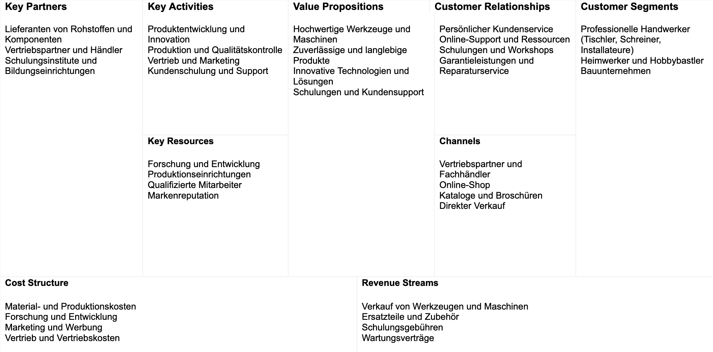

3 Ziele und Anforerungen
3.1 Anforderung
Der Kurs Einsatz von Large Language Models im Unternehmensanwendungen konzentriert sich auf die Erforschung und Realisierung des Potenzials von LLMs (z. B. GPT-4 von OpenAI) zur Automatisierung verschiedener Geschäftsaufgaben. Insbesondere werden wir untersuchen, wie LLMs zur Automatisierung von Routineaufgaben wie dem Verfassen von E-Mails und der Erstellung von Berichten eingesetzt werden können (Kirenz, 2023)
3.2 Ziel
Ziel ist es, die Produktivität und Effizienz in Unternehmen zu steigern und gleichzeitig die Qualität und Konsistenz der generierten Inhalte sicherzustellen.
3.3 Ideen Entwicklung
Zu Beginn, waren wir auf der Suche nach einer passenden Idee, die alle Anforderungen abdeckt. Schnell war uns in der Gruppe klar, wir wollen einen Sprachassistenten entwicklen, der Prozesse irgendwelcher Art in Unternehmen vereinfacht und deutlich verbessert. Wiederkehrende Tätigkeiten sollten somit einfacher und vor allem schneller damit gestaltet werden. Nach einigem Abwägen sind wir auf zwei Ideen gekommen die wir weiter ausgearbeitet haben:
Idee 1 - ein Unternehmensinterner Support Bot für bestehende Prozesse
- Ziel hierbei: Eine oder mehrere ausgewählte Prozesse eines Unternehmens zu verbesern. Das kann die Übernahme eines Urlaubsantrags, einer Krankmeldung, einer E-Mail Zusammenfassung sein oder aber auch Arbeitsstunden eintragen und ein IT-Ticket anlegen.
- Der Mitarbeiter sollte hier auswählen können um welchen Prozess es sich handelt und anschließend hierbei Hilfe erhalten
- Funktional wäre dies eine Kombination aus einem generellen IT-System was interene Unternehmensprozesse abbildet verknüpft mit einem Sprach-/Chat Assistent der auf natürlicher Eingabe des Mitarbeiters diese umsetzt.
Idee 2 - Geschäftsreisenplanner - Ziel hierbei: Entwicklung einer Anwendung zur Geschäftsreiseplanung - Automatische Suche nach Verkehrsverbindungen, Hotels und möglichen Aktivitäten durch ein Language Model (LLM) und die Zusammenstellung der Informationen in einem Dokument als Reiseplaner - Gründe für die Ablehnung: Datenbeschaffung, bedingt dadurch, dass wir Flugdaten, Bahnverbindungen und Verkehrsinformationen hätten zur Verfügung stellen müssen wäre die Datenmenge extrem groß gewesen.Desweiteren hätten die Daten Frequenzziel abgefragt werden müssen über verschiedene API’S. Dies hat sich bei den Airlines als schwierig und vor allem als sehr kostenintensiv herausgestellt.
Idee 3 - Geschäftsreisenplanner - Ziel hierbei: Die Anwendung sollte in der Lage sein, Telefongespräche aufzuzeichnen und mithilfe der WhisperApi den Dialog in eine Textdatei umzuwandeln. Anschließend sollte ein Language Model (LLM) den Text kürzen und zusammenfassen - Gründe für die Ablehnung: - Technologie existiert bereits. Dies hätte bedeutet, dass wir ein bestehendes Produkt entwickeln würden, das nicht spezifisch auf die Bedürfnisse unseres Unternehmens zugeschnitten ist - Ein weiterer Gesichtspunkt war für uns das persönliche Interesse, für uns strahlte diese Projektidee keine starke Begeisterung aus, womit wir uns gemeinsam dagegen entschieden haben.
Idee 4 - Script tool für Meetings
- Ziel hierbei: Kunden so schnell wie möglich perfekte Produktvorschläge liefern. Dabei soll zudem der Kunde bei der Kaufentscheidung unterstützt werden und ihm auf Rückfrage auch Technische Details und Vor- und Nachteile genannt werden. Dem Kunden soll durch eine natürliche Unterhaltung und geschickt gestellten Rückfragen zu einer für ihn perfekten Kaufentscheidung verholfen werden
- Kunden können dabei Fragen über alle Produkte stellen oder aber nur Anwendungsbereiche definieren. Das Chatsystem stellt dann passende Produkte vor.
Nach kurzer Diskussion waren wir uns einig, Idee 1 weiter zu verfolgen. Dies hatte folgende Gründe:
- Daten beschaffung gut möglich (über Produktinformationen in dem jeweiligen Online Shop)
- Realistische Situation was uns motiviert, das System gut zu gestalten
- Bekannter Prozess. Wir müssen nicht erst fiktive Unternehmensprozesse erfinden sondern können direkt anahnd eines realen Problems unsere Lösung anwenden
- relevanz der Idee in der realen Welt (Chat Systeme finden immer mehr Anwendung in Verkaufssituationen)
3.4 Auswahl des Unternehmens
Bei der Auswahl des Unternehmens war es uns wichtig, dass das Unternehmen folgende eigenschaften Besitzt: - Kein gleiches oder ähnliches System bereits vorhanden - eine gute datenbeschaffungs Basis (viele Produktinformationen in Form von Bedienungsanleitungen Beschreibungen im Online Shop, o.ä.) - Produkte für Endanwender - grundsätzliches Interesse an den Produkten in unserer Gruppe - diverses Produktportfolio
Aufgrund dieser Kriterien standen für uns folgende Firmen zur Auswahl:
- IKEA
- Stihl
- Festool
- Ensinger Mineral-Heilquellen GmbH
- Kärcher
Final haben wir uns für die Firma FESTOOL entschieden, da sie noch kein so ein System besitzt uns wir überzeugt sind, dass ein solcher Chatbot für Profis als auch für Amateure im Bereich “Bauen” hilfreich sein kann. Zudem hat FESTOOL sehr viele Produktinformationen in ihrem Onlineshop, was sich gut eigenet um es dem LLM als Informationen zu übergeben.
3.5 Business Model Canvas

3.6 Use Case
Der Kunde kann…
- Fragen zu Produkten auf der Festtool Website stellen
- Rückfragen zu vorher gestellten Fragen stellen
- Auf Antworten des Chatbots eingehen
- Den Chat über einen Button “Clear” schalten
- Seine Fähigkeit bzw. sein Vorwissen “Profi - Amateur - Anfänger” einstellen
3.7 User Personas
Person 1:
Herr Schmid besitzt eine Schreinerei. In der Vergangenheit hat er bereits einige Festtool Geräte gekauft. Nun ist seine Tauchkreissäge mit Kabelanschluss bei einem Kundenauftrag kaputt gegangen. Er beauftragt den Azubi, die gleiche Säge erneut zu bestellen. Falls es mittlerweile Sägen gibt, die bessere Features haben, soll der Azubi ihm diese nennen. Anschließend entscheiden Sie gemeinsam ob eine neue Säge gekauft wird.
Der Azubi geht auf die Homepage von Festtool. Damit er nicht lange suchen muss, benutzt er den Chatbot und gibt seine informationen ein.
Direkt erhält er eine Antwort und kann mit dieser Antwort zu seinem Chef gehen.
Person 2:
Simone möchte für Ihre Verwandschaft und einige Freunde als Geschenk für Weihnachten Sterne aus einer Holzplatte aussägen. Diese sollen anschließend aufgehangen werden. Dazu benötigt Sie Werkzeug, mit dem auch sie als Bastelanfängerin umgehen kann. Sie besucht die Festool Seite und schildert dem Chatbot ihr vorhaben. Dieser empfiehlt ihr anschließend Werkzeuge, die zu Simones vorhaben am besten geeignet sind.
Person 3:
Elisa braucht einen passenden Akkuschrauber, um ihre neuen Möbel aufzubauen. Sie weiß von ihrem Vater, dass die Marke Festool führend im Bereich Elektrowerkzeuge ist und möchte sehr gerne einen Akkuschrauber von Festool kaufen. Sie ruft die Webseite auf und nutzt Chatbot, um den passenden Akkuschrauber für ihre Bedürfnisse zu finden.
Person 4:
Markus verfügt über eine gut ausgestattete Werkstatt in seinem Keller, in der er regelmäßig Möbel baut, Elektronikprojekte umsetzt und kleine Reparaturen durchführt. Qualität in Bezug auf Akkuschrauber mangelhaft. Weswegen sich Markus für die Akkuschrauber von Festool interessiert. Er findet mithilfe des Chatbots den passenden Akkuschrauber und kann sich auch durch den Bot, genau die Produktdaten ausgeben lassen, die er benötigt, ohne dabei stunden nach diesen zu suchen.